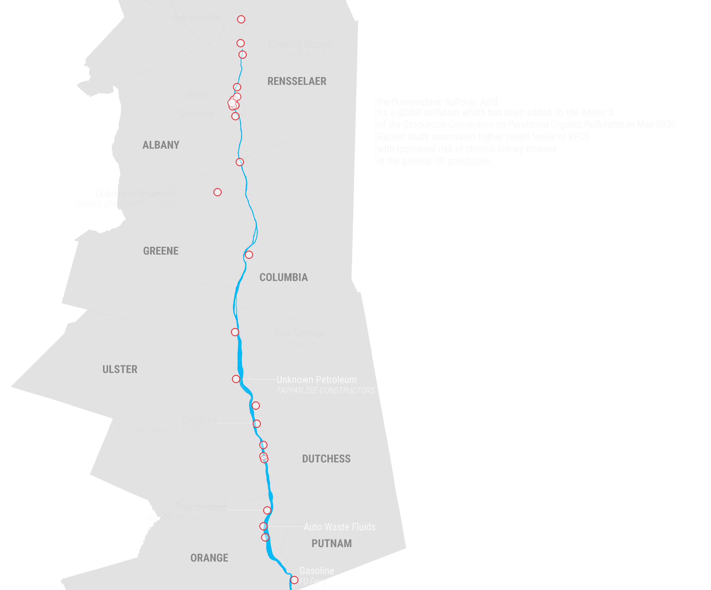
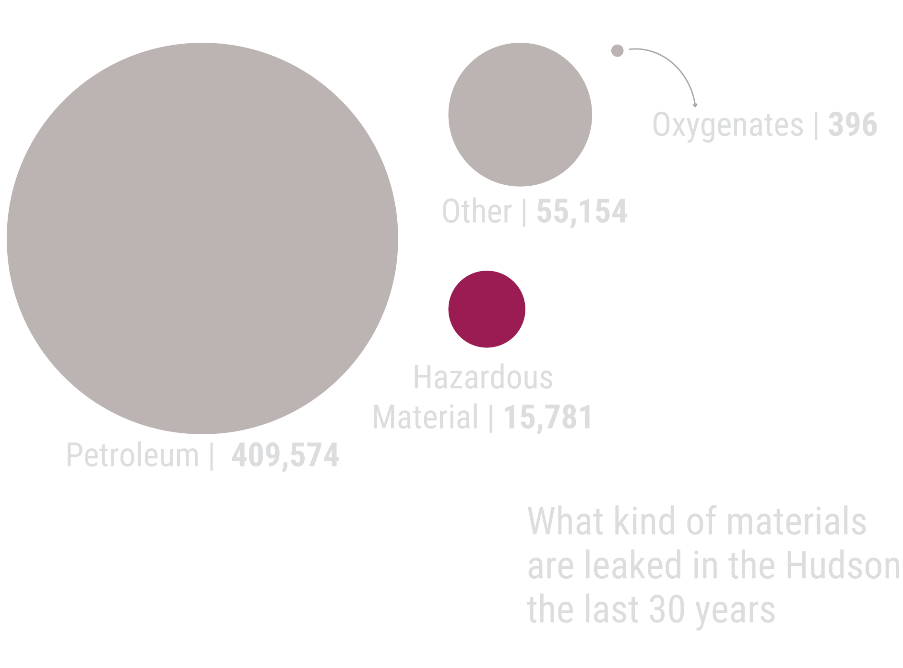
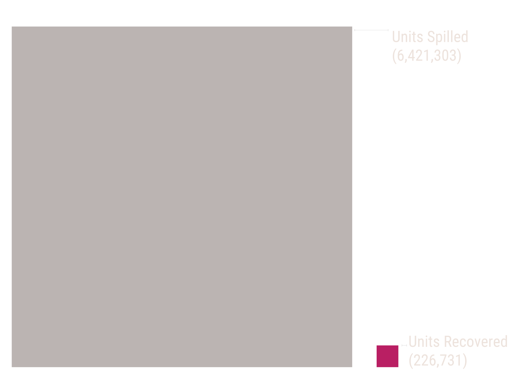
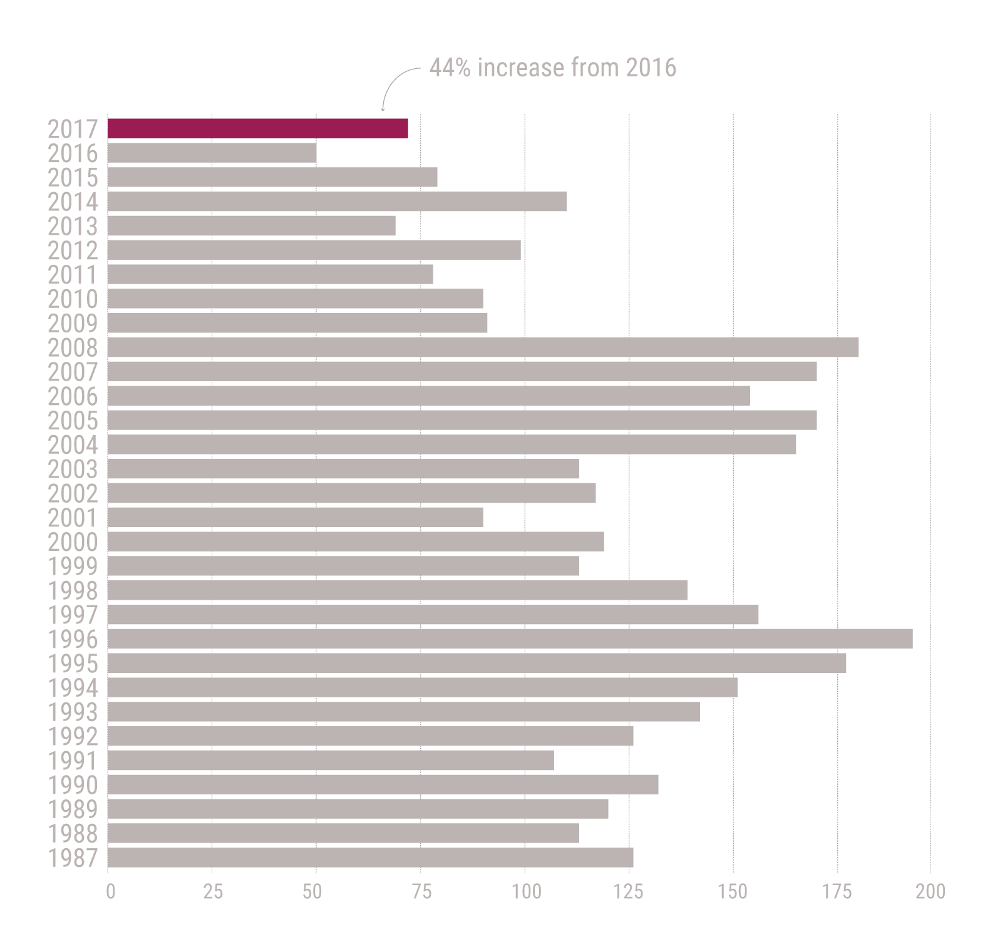

Enviroment
Toxic Spills in the Hudson River
BY Thanasis Trompoukis
Published Month 00, 2018
More than 16,000 spills are reported every year in the State of New York. In 2017 more than 70 reported spills had an affect at the Hudson and the East rivers. The incidents increased by 38% compared to a year before. Petroleum, gazoline and other hazardous materials are the most common toxic products which are either intentionally or by accident leaked in the Hudson or in nearby areas.
Spills in the Hudson since 2017
These are recorded incidents that according to the Department of Environmental Conservation of the State of NY affected the Hudson River. The data cover the period from January 2017 to July 2018.

The data which are released by the Department of Environmental Conservation, are related to spills which are reported to the agency either by those responsible for the leak, or any other individual who withned the incident or just saw the spill. There are many laws and regulations in New York State that require releases of petroleum, chemicals and materials which may cause environmental damage to be reported. In all cases, the responsible party or the property owner is required to report the discovery of a release. Many of the laws and regulations also place burden on consultants, contractors, or any one with knowledge.
Spills around Manhattan and Brooklyn
When petroleum products and MTBE (octane-enhancing replacement) is released to the enviroment, they dissolve in the groundwater contaminating it.
Jan 2017 - Jul 208
30 Years of Toxic Leaks in the Hudson
The combined spills in the Hudson and along Newtown Creek have obliterated wildlife, polluted an aquifer, hindered economic development and set off health scares among those who live and work nearby. “The impact is more subtle than in the gulf,” had said Phillip Musegaas, a lawyer with Riverkeeper, an environmental group to the New York Times, regarding the spills in the Newton Creek, a tidal arm of the New York-New Jersey Harbor Estuary that forms the northwestern-most border between the New York City boroughs of Brooklyn and Queens. “The spill is unseen, and it’s in an area that was industrialized and already polluted. But the waterway is severely stressed, and it’s not a functioning ecosystem anymore.”
Recored Spills in Rockland and Westchester
Each point is a reported spill. The whiter the point, the more the spills in that area.

Jan 2017 - Jul 208.
The New York State Department of Environmental Conservation (NYSDEC) has listed various portions of the Hudson as having impaired water quality due to PCBs, cadmium, and other toxic compounds. Between 1947 and 1977, General Electric polluted the Hudson River by dispensing polychlorinated biphenyls (PCBs), causing a range of harmful effects to wildlife and people who eat fish from the river or drink the water. In 2010, the NYSDEC determined that the Indian Point Energy Center, a nuclear power plant in Buchanan, was violating the Clean Water Act because of its large withdrawals of water from the Hudson, which kills millions of fish and other aquatic organisms each year. The state requested that Entergy, the plant operator, replace its fish screens with cooling towers to mitigate the environmental impacts.
Spills at the Upper Hudson River Valley
.
NOTE: an optional note or source can go here.
SOURCE: Sourcename here
Despite the effords to clead the Hudson River from PCB, an updated report issued by The Hudson River Natural Resources Trustees, claims that the Hudson River remains contaminated with levels of PCBs that don’t meet state and federal regulations and the river cleanup remains incomplete. The Trustees is a group made up of representatives from agencies U.S. Department of Commerce, U.S. Department of the Interior and the state that are responsible for natural resource damage assessment.
Materials Leaked to Hudson
The eight most common materials.
Categories of Substances Spilled in the Hudson
The graph shows the volume of the material from 1987 to 2018.
Units Spilled Vs Units Recovered
The units is in gallons or pounds.
30 Years of Spills in Hudson and East River
The last decade there is a substancial decline in the recorded number of spills in the Hudson. However in 2017 the number of the spills increased by 44%.
